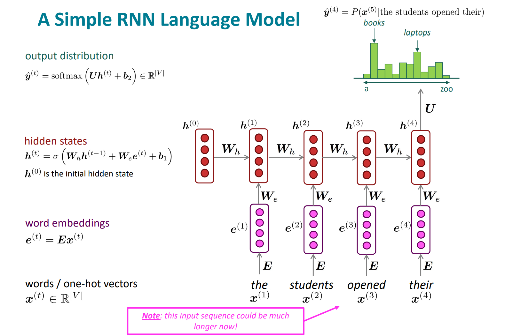
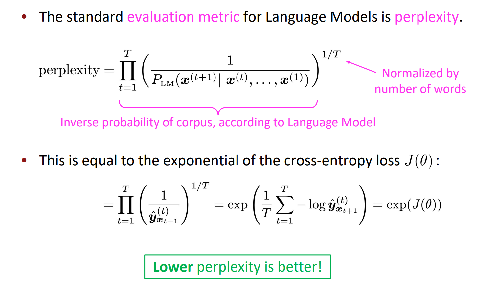

Recurrent Neural Networks
1. RNN Language Model

2. RNN Loss and Perplexity
Loss function on step \(\mathcal{t}\) is cross-entropy between predicted probability distribution, and the true next word (one-hot for ):
\[
J^{(t)}(\theta)=C E\left(\mathbf{y}^{(t)}, \hat{\mathbf{y}}^{(t)}\right)=-\sum_{w \in V} \mathbf{y}_{w}^{(t)} \log \hat{\mathbf{y}}_{w}^{(t)}=-\log \hat{\mathbf{y}}_{\mathbf{x}_{t+1}}^{(t)}
\]
Average this to get overall loss for entire training set:
\[
J(\theta)=\frac{1}{T} \sum_{t=1}^{T} J^{(t)}(\theta)=\frac{1}{T} \sum_{t=1}^{T}-\log \hat{\mathbf{y}}_{\mathbf{x}_{t+1}}^{(t)}
\]

Vanishing and Exploding Gradient are serious problems, many solutions: Solution to the Exploding & Vanishing Gradients